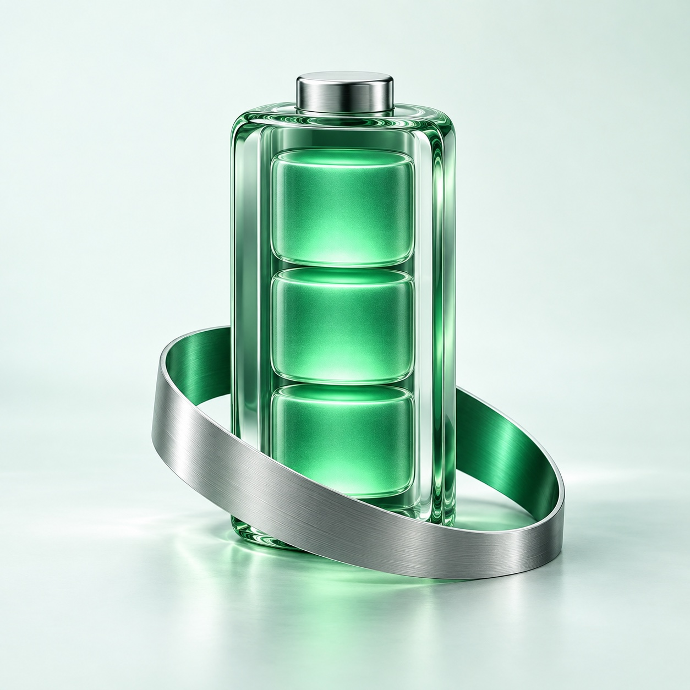

A quick read on your day
Check charge, power source, and charging state from your menu bar. Open Details for the readings your Mac makes available, with estimates clearly marked.
Live monitoringA little more insight. Right in your menu bar.
Know what’s powering your day. Live battery readings, useful history, and the details that matter — in a native Mac app.
Built for Apple silicon MacBooks Archived October 17, 2026

Illustrative preview · sample values
LESS GUESSWORK
Start with the percentage. Stay for the bigger picture. StatBatt brings your battery’s story into focus without getting in your way.
Illustrative history · sample values
Check charge, power source, and charging state from your menu bar. Open Details for the readings your Mac makes available, with estimates clearly marked.
Live monitoringLook back over seven days of one-minute summaries. Sleep gaps stay visible. Export a CSV when you want to take a closer look.
History & exportsA native interface, local history, and alerts you choose to turn on. Pause recording in Settings, or clear your history in History. No cloud account needed.
Local by designFINAL PROJECT STATUS
ARCHIVED · LOCAL BUILD 14StatBatt development has ended. The app remains an unfinished local project, with its design and research preserved here.
Live monitoring, seven-day history, CSV exports, settings, and opt-in alerts. Readings vary by Mac; unavailable values are shown as unavailable.
Both shortcut-backed buttons were verified through the app on one Mac and macOS target. Wider compatibility, precise physical cutoff, and complete lifecycle acceptance were not established.
A separate local build recorded bounded adapter-pause and recovery trials. Live automatic-session acceptance remained unfinished. There is no public app download, and no release is planned.
A FEW GOOD QUESTIONS
A little context about the project and its final state.
No public app download was released. Development has ended, and no signed or notarized public release is planned. This page remains as a project archive.
Apple silicon MacBooks. The app targets macOS 15 or later, but current qualification covers one Apple silicon device on macOS 27.0.1. Older macOS versions, other devices, and Intel Macs have not been qualified.
The local app’s Apple 80% and 100% shortcut buttons were verified on one exact Mac and macOS target. A separate temperature-control build reached local recovery trials, with automatic-session acceptance unfinished. It is not a qualified thermal-protection system. Apple’s selected charge limit persists after quitting the app.
It stays on your Mac. StatBatt keeps seven days of one-minute summaries in local storage. You can pause recording, export a CSV, or clear the history from the app. The current build has no cloud account or analytics service.
Health and battery temperature are estimates when available, not a battery diagnosis. Advanced readings depend on the device and macOS version. StatBatt labels estimates and missing readings so you can tell what your Mac is actually reporting.
Battery insight, with a Mac state of mind.
Take a closer look